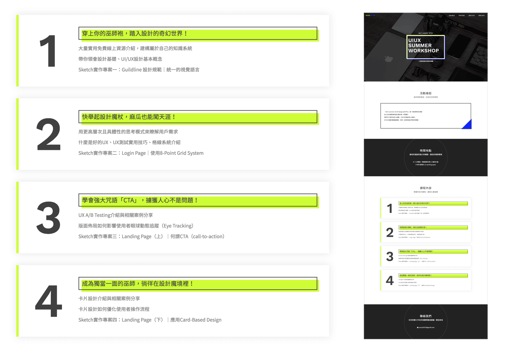
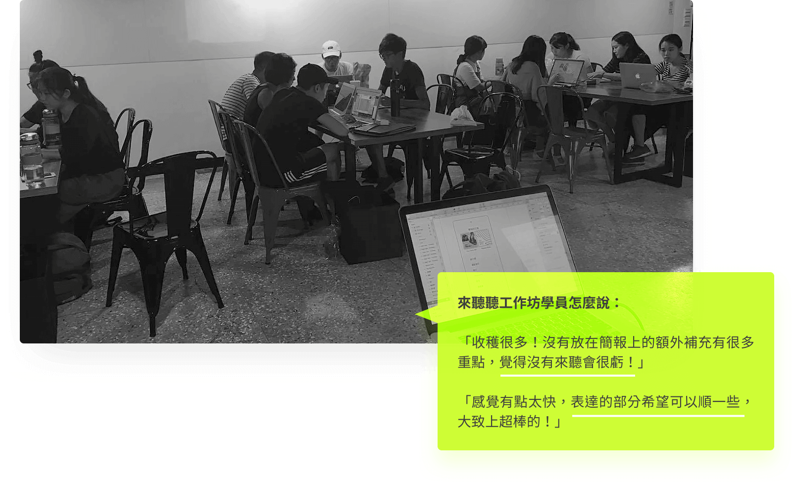
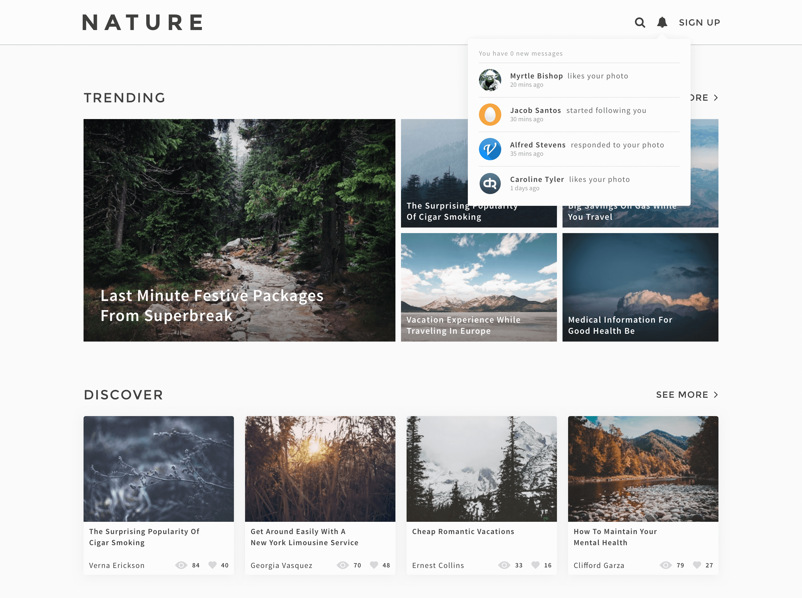

從開始自學 UI/UX 以來，身邊陸續有朋友也想學習相關知識和技能，卻因缺乏動力、找不到目標相似的夥伴，遲遲沒有踏出第一步。於是我決定提供給新手一個能夠有效成長的共同學習環境。
和其他兩位同樣對設計充滿熱情的夥伴在暑假自發性地舉辦一週一次、為期四週的校內工作坊。規劃總時 720 分鐘的重量級課程，共有 18 位想踏入設計領域的學員一同參與，享受設計所帶來的樂趣。
藉由規劃紮實的系列課程，實踐「從做中學」的理念，同時延伸出更多設計上的想法。
透過實體的交流分享，找尋志同道合的夥伴，也從學員的回饋中，看見自己可以改進和加強的部分。
第四週的課程教材，介紹何謂卡片式設計 (Card-Based Design)，在有限的空間中建立無限的可能性。
 See the website Previous: Worry-Free Next: pinkoi